In hierdie hoofstuk gaan jy
leer hoe om algebraïese uitdrukkings te vereenvoudig
deur hulle uit te brei. Uitbreiding van 'n
algebraïese uitdrukking stel jou in staat om die
vorm van 'n uitdrukking te verander sonder om die
uitvoerwaardes wat dit gee te verander.
Wanneer jy berekeninge wil vereenvoudig
en uitdrukkings wil vergelyk, kan dit nuttig wees om 'n
uitdrukking in 'n ander vorm te herskryf. Die twee metodes wat
ons hoofsaaklik gebruik om uitdrukkings te vereenvoudig, is die
volgende: ons kombineer gelyksoortige terme en/of gebruik die
verspreidingseienskap (of distributiewe eienskap).
8.1 Brei
algebraïese uitdrukkings uit 147
8.2 Vereenvoudig
algebraïese uitdrukkings 152
8.3 Vereenvoudig
kwosiëntuitdrukkings 155
8.4 Kwadrate, derdemagte en
wortels van uitdrukkings 160

8
Algebraïese uitdrukkings 2
8.1 Brei algebraïese uitdrukkings uit
VERMENIGVULDIG 'N
PAAR KEER OF NET EEN KEER: DIT IS JOU KEUSE
1. (a) Bereken 5 \times 13 en 5 \times 87 en
tel die twee antwoorde bymekaar.
(b) Tel 13 en 87 bymekaar en vermenigvuldig
dan die antwoord met 5.
(c) As jy nie dieselfde antwoord vir vrae
1(a) en (b) kry nie, het jy 'n fout gemaak. Doen jou werk oor
tot jy dit regkry.
Die feit dat jy
dieselfde antwoord vir vrae 1(a) en (b) kry as jy reg werk, is
'n voorbeeld van 'n bepaalde eienskap van optel en
vermenigvuldiging wat die verspreidings-eienskap of
distributiewe eienskap genoem word. Jy gebruik hierdie
eienskap elke keer as jy 'n getal in dele vermenigvuldig.
Byvoorbeeld, jy kan 3 \times 24 bereken as
Die woord
distribueer
beteken "om te versprei". Die distributiewe
eienskappe of
verspreidingseienskappekan soos volg beskryf word:
a(b +
c) = ab + ac
en
a(b -
c) = ab – ac,
waar a, b en
c enige getalle kan wees.
3 \times 20 en 3 \times 4
en dan die twee antwoorde
bymekaartel
3 \times 24 = 3 \times 20 + 3 \times 4.
Wat jy in vraag 1 gesien het, is dat
5 \times 100 = 5 \times 13 + 5 \times 87.
Dit kan ook uitgedruk word deur 5(13
+ 87) te skryf.
2. (a) Bereken 10 \times 56.
(b) Bereken 10 \times 16 + 10 \times 40.
3. Skryf enige twee getalle kleiner as 100
neer. Kom ons noem hulle x en y. (a) Tel jou twee getalle
bymekaar en vermenigvuldig die antwoord met 6.
(b) Bereken 6 \times x en 6 \times y en tel die twee antwoorde
bymekaar.
(c) As jy nie
dieselfde antwoorde vir (a) en (b) kry nie, het jy iewers 'n
fout gemaak. Soek die fout en maak dit reg.
4. Voltooi die tabel.
|
(a)
|
x
|
1
|
2
|
3
|
4
|
5
|
|
3(x + 2)
|
9
|
12
|
15
|
18
|
21
|
|
3x + 6
|
9
|
12
|
15
|
18
|
21
|
|
3x + 2
|
5
|
8
|
11
|
14
|
17
|
|
3(x - 2)
|
-3
|
0
|
3
|
6
|
9
|
|
3x - 6
|
-3
|
0
|
3
|
6
|
9
|
|
3x - 2
|
1
|
4
|
7
|
10
|
13
|
(b) As jy nie dieselfde antwoorde vir die
uitdrukkings 3(x +
2) en 3x + 6 kry nie
en/of nie dieselfde antwoorde vir 3(x - 2) en 3x - 6 kry nie, het jy iewers 'n
fout gemaak. Werk die antwoorde weer 'n keer
uit.
In algebra skryf ons gewoonlik
3(x + 2) in plaas
van 3 \times (x +
2). Die uitdrukking3 \times (x + 2) beteken nie jy moet eers
met 3 vermenigvuldig wanneer jy die uitdrukking vir 'n bepaalde
waarde van x
evalueer nie. Die hakies sê vir jou die eerste ding
wat jy moet doen, is om die waarde(s) van x by 2 te tel, en dan die
antwoord met 3 te vermenigvuldig.
Maar, in plaas daarvan om
eers die waardes tussen hakies bymekaar te tel en dan die
antwoord met 3 te vermenigvuldig, kan ons bloot 3 \times
x + 3 \times 2 =
3x + 6 bereken, soos
in die tabel gewys word.
(c) Watter van die uitdrukkings in die tabel
is ekwivalent aan mekaar? Verduidelik.
(d) Vir watter waarde(s) van x is 3(x + 2) = 3x
+ 2?
(e) Probeer om 'n waarde van x te vind sodat 3(x + 2)
≠3x + 6.
As vermenigvuldiging die
laaste stap in die evaluering van 'n algebraïese
uitdrukking is, word die uitdrukking 'n
produkuitdrukking of, in kort, 'n produk
genoem. Die manier waarop jy die uitdrukking 3(x + 2) in die tabel
geëvalueer het, is 'n voorbeeld van 'n
produkuitdrukking.
5. (a) Bepaal die waarde van
5x + 15 as x = 6.
(b) Bepaal die waarde van
5(x + 3) as x = 6.
(c) Kan ons die uitdrukking 5x + 15 gebruik om die waarde van
5(x + 3) vir enige
waardes van x te
bereken? Verduidelik.
6. Voltooi die
vloeidiagramme.
(a) (b)
(c) (d)
(e) (f)
7. (a) Watter van die vloeidiagramme hier bo
lewer dieselfde uitvoergetalle?
(b) Skryf 'n algebraïese
uitdrukking vir elk van die vloeidiagramme in vraag 6.
PRODUKUITDRUKKINGS EN
SOMUITDRUKKINGS
1. Voltooi die volgende:
(a) (3 + 6) + (3 + 6) + (3 +
6) + (3 + 6) + (3 + 6)
=
\times (
)
(b) (3 + 6) + (3 + 6) + (3 +
6) + (3 + 6) + (3 + 6)
= (3 + 3 +
) + (
)
= (
\times
) + (
\times
)
2. Voltooi die volgende:
(a) (3x + 6) +
(3x + 6) + (3x + 6) + (3x + 6) +
(3x + 6)
=
(
)
(b) (3x + 6) +
(3x + 6) + (3x + 6) + (3x + 6) +
(3x + 6)
= (3x + 3x +
) + (
)
= (
\times
)
(
\times
)
3. Skryf vir elke
uitdrukking 'n uitdrukking sonder hakies wat dieselfde
resultate sal gee.
(a) 3(x + 7) (b) 10(2x +
1)
(c) x(4x + 6) (d) 3(2p
+ q)
(e) t(t + 9) (f)
x(y + z)
(g) 2b(b + a - 4) (h)
k2(k -
m)
Die proses om
produkuitdrukkings as somuitdrukkings te skryf, word
uitbreiding genoem. Dit word soms ook
vermenigvuldiging van algebraïese
uitdrukkings genoem.
4. (a) Voltooi die tabel vir die gegewe
waardes van x,
y en z.
|
3(x
+ 2y + 4z)
|
3x +
6y + 12z
|
3x +
2y + 4z
|
|
x =
1
y =
2
z =
3
|
3(1
+ 4 + 12)
= 3
\times 17
=
51
|
3 +
12 + 36
=
51
|
3 +
4 + 12
=
19
|
|
x =
10
y =
20
z =
30
|
3(10 + 40 + 120)
= 3
\times 170
=
510
|
30
+ 120 + 360
=
510
|
30
+ 40 + 120
=
190
|
|
x =
23
y =
60
z =
100
|
3(23 + 120 + 400)
= 3
\times 543
= 1
629
|
69
+ 360 + 1 200
= 1
629
|
69
+ 120 + 400
=
589
|
|
x =
14
y =
0
z =
1
|
3(14 + 0 + 4)
= 3
\times 18
=
54
|
42
+ 0 + 12
=
54
|
42
+ 0 + 4
=
46
|
|
x =
5
y =
9
z =
32
|
3(5
+ 18 + 128)
= 3
\times 151
=
453
|
15
+ 54 + 384
=
453
|
15
+ 18 + 128
=
161
|
(b) Watter somuitdrukking en
produkuitdrukking is ekwivalent?
5. Skryf vir elke uitdrukking 'n
ekwivalente uitdrukking sonder hakies.
(a) 2(x2 + x + 1) (b)
p(q + r + s)
(c) -3(x + 2y +
3z) (d) x(2x2 + x + 7)
(e) 6x(8 - 2x) (f)
12x(4 - x)
(g) 3x(8x - 5) -
4x(6x - 5) (h) 10x(3x(8x -
5) - 4x(6x - 5))
24x2 -
15x - 24x2 + 20x = 5x
8.2 Vereenvoudig algebraïese uitdrukkings
BREI GELYKSOORTIGE
TERME UIT, HERRANGSKIK EN KOMBINEER HULLE
1. Skryf die kortste moontlike
ekwivalente uitdrukking sonder hakies.
(a) x + 2(x + 3) (b)
5(4x + 3) + 5x
= 20x +
5x + 15 = 25x + 15
(c) 5(x + 5) + 3(2x + 1) (d)
(5 + x)2
(e) -3(x2 + 2x - 3) +
3(x2 +
4x) (f) x(x - 1) + x + 2
=
-3x2 -
6x + 9 + 3x2 + 12x
=
-3x2 +
3x2 -
6x + 12x + 9
As jy nie seker is of jy 'n
uitdrukking korrek vereenvoudig het nie, moet jy jou werk
altyd kontroleer deur die oorspronklike uitdrukking en die
vereenvoudigde uitdrukking vir 'n paar waardes van die
veranderlikes te evalueer.
2. (a) Evalueer x(x + 2) +
5x2 -
2x vir x = 10.
(b) Evalueer 6x2 vir x = 10.
(c) Kan ons die uitdrukking 6x2 gebruik om die waardes van die
uitdrukking x(x + 2) + 5x2 - 2x vir enige gegewe waarde van
x te bereken?
Verduidelik.
Dit is hoe 'n somuitdrukking vir
x(x + 2) + 5x2 - 2x gemaak kan word:
x(x + 2) + 5x2 - 2x = x \times
x + x \times 2 + 5x2 - 2x
= x2 + 2x +
5x2 -
2x
= x2 + 5x2 + 2x - 2x
[Herrangskik en kombineer
= 6x2 + 0 gelyksoortige terme]
= 6x2
3. Evalueer die volgende
uitdrukkings vir x =
-5:
(a) x + 2(x + 3) (b)
5(4x + 3) + 5x
(c) 5(x + 5) + 3(2x + 1) (d)
(5 + x)2
(e) -3(x2 + 2x - 3) +
3(x2 +
4x) (f) x(x - 1) + x + 2
4. Voltooi die tabel vir die
gegewe waardes van x, y en z.
|
x
|
100
|
80
|
10
|
20
|
30
|
|
y
|
50
|
40
|
5
|
5
|
20
|
|
z
|
20
|
30
|
2
|
15
|
10
|
|
x
+ (y - z)
|
130
|
90
|
13
|
10
|
40
|
|
x
- (y - z)
|
70
|
70
|
7
|
30
|
20
|
|
x
- y - z
|
30
|
10
|
3
|
0
|
0
|
|
x
- (y + z)
|
30
|
10
|
3
|
0
|
0
|
|
x
+ y - z
|
130
|
90
|
13
|
10
|
40
|
|
x
- y + z
|
70
|
70
|
7
|
30
|
20
|
5. Sê of
die volgende stellings waar of onwaar is. Verwys na die tabel
in vraag 4. Vir enige waardes van x, y en z:
(a) x + (y - z) =
x + y – z (b) x
- (y - z) = x - y - z
6. Skryf die uitdrukkings sonder
hakies. Moenie vereenvoudig nie.
(a) 3x - (2y + z) (b)
-x + 3(y - 2z)
Ons kan algebraïese
uitdrukkings vereenvoudig deur eienskappe van bewerkings te
gebruik, soos hier gewys word:
x – (y + z)
= x –
y –
z
Optelling is assosiatief
sowel as kommutatief.
(5x + 3) - 2(x + 1)
Daarom 5x + 3 - 2x - 2
Daarom 5x - 2x + 3 - 2
Daarom 3x + 1
7. Skryf 'n ekwivalente
uitdrukking sonder hakies vir elk van die volgende uitdrukkings
en vereenvoudig dan:
(a) 22x + (13x - 5) (b)
22x - (13x - 5)
(c) 22x - (13x + 5) (d)
4x - (15 - 6x)
8. Vereenvoudig.
(a) 2(x2 + 1) - x - 2 (b)
-3(x2 +
2x - 3) + 3x2
Hier is 'n paar van die
tegnieke wat ons tot dusver gebruik het om ekwivalente
uitdrukkings te vorm:
8.3 Vereenvoudig kwosiëntuitdrukkings
VAN
KWOSIËNTUITDRUKKINGS NA SOMUITDRUKKINGS
1. Voltooi die tabel vir die
gegewe waardes van x.
|
x
|
1
|
7
|
-3
|
-10
|
|
7x2 +
5x
|
7 +
5
=
12
|
(7
\times 49) + (5 \times 7)
=
343 + 35
=
378
|
(7
\times 9) + (5 \times -3)
=
63 -15
=
48
|
700
- 50
=
650
|
|

|
|
|
|
|
|
7x + 5
|
7 +
5
=
12
|
49
+ 5
=
54
|
-21
+ 5
=
-16
|
-70
+ 5
=
-65
|
|
7x + 5x
|
7 +
5
=
12
|
49
+ 35
=
84
|
-21
-15
=
-36
|
-70
- 50
=
-120
|
|
7x2 +
5
|
7 +
5
=
12
|
(7
\times 49) + 5
=
343 + 5
=
348
|
63
+ 5
=
68
|
700
+ 5
=
705
|
2. (a) Wat is die waarde van 7x + 5
vir x = 0?
(b) Wat is die waarde van  vir x = 0?
vir x = 0?
(c) Watter een van die twee uitdrukkings
7x + 5 of 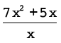 verg minder berekeninge?
Verduidelik.
(d) Is die uitdrukkings 7x + 5 en
 ekwivalent, x = 0 uitgesluit?
Verduidelik.
ekwivalent, x = 0 uitgesluit?
Verduidelik.
(e) Is daar enige ander uitdrukkings wat
ekwivalent is aan  uit dié wat in die tabel
gegee word? Verduidelik.
uit dié wat in die tabel
gegee word? Verduidelik.
As deling die laaste stap
in die evaluering van 'n algebraïese uitdrukking
is, word die uitdrukking 'n
kwosiëntuitdrukking of 'n
algebraïese breuk genoem.
3. Voltooi die tabel vir die
gegewe waardes van x.
|
x
|
5
|
10
|
–5
|
–10
|
|
10x - 5x2
|
50
- 125
=
-75
|
100
-500
=
-400
|
-50
- 125
=
-175
|
-100 – 500
=
-600
|
|
5x
|
5
\times 5
=
25
|
5
\times 10
=
50
|
5
\times -5
=-25
|
5
\times -10
=
-50
|
|

|
|
|
|
|
|
2 -
x
|
2 -
5
=
-3
|
2 -
10
=
-8
|
2 -
(-5)
=
7
|
2
-(-10)
=
12
|
(a) Wat is die waarde van 2 - x vir
x = 0?
(b) Wat is die waarde van  vir x = 0?
vir x = 0?
(c) Is die uitdrukkings 2 - x en  ekwivalent, x = 0 uitgesluit?
Verduidelik.
ekwivalent, x = 0 uitgesluit?
Verduidelik.
(d) Watter een van die twee uitdrukkings 2 -
x of
 verg minder berekeninge?
Verduidelik.
verg minder berekeninge?
Verduidelik.
2 - x. It requires only one
calculation. requires six calculations:
four multiplications, one subtraction and one
division.
Ons het gevind dat
kwosiëntuitdrukkings soos soms gemanipuleer kan word om
ekwivalente uitdrukkings soos 2 - x te gee. Die
waarde hiervan is dat hierdie ekwivalenteuitdrukkings minder
berekeninge verg.
Hoe is dit moontlik dat
 = 7x + 5 en
= 7x + 5 en
 = 2 - x vir alle
toelaatbare
= 2 - x vir alle
toelaatbare
waardes van x? Ons
sê x = 0 is nie 'n
toelaatbare waarde van x nie, want deling deur
0 word nie gelaat nie.
Een van die metodes om ekwivalente uitdrukkings
vir algebraïese breuke te bepaal, is deur middel van
deling:
 = (7x2 + 5x) [net soos
= 3 \times ]
= (7x2 + 5x) [net soos
= 3 \times ]
= ( \times 7x2) + (
\times 7x2) + ( \times 5x)
[verspreidingseienskap]
\times 5x)
[verspreidingseienskap]
= +
= 7x + 5 [op voorwaarde dat
x ≠0]
4. Gebruik die metode op die
vorige bladsy om elke breuk hier onder te vereenvoudig.
(a)  (b)
(b)
= (
\times 8x) + ( \times 10z) + ( \times 6)
= (
\times 20x2) + ( \times
16x)
(c) 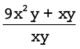 (d)
= (
\times 9x2y) + ( \times
xy)
= (
\times 21ab) - ( \times 14a2)
Vereenvoudiging van 'n
kwosiëntuitdrukking kan soms tot 'n resultaat lei
wat nog steeds kwosiënte bevat, soos jy in die
voorbeeld hier onder kan sien.
5. (a) Evalueer
 vir x = -1.
vir x = -1.
(b) Watter waarde van x moet uitgesluit word sodat die
uitdrukking  ekwivalent is aan 5 +
ekwivalent is aan 5 +
 ? Waarom?
? Waarom?
x = 0, because x2 = 0 and division by 0 is
undefined and therefore not allowed.
6. Vereenvoudig die volgende
uitdrukkings:
(a)  (b)
(b)
7. Evalueer:
(a)  vir x = 2 (b)
vir x = 2 (b)
 vir n = 4
vir n = 4
8. Vereenvoudig.
(a)  (b)
(b)
9. Toe Natasha en
Lebogang gevra is om die uitdrukking 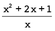 vir x = 10 te evalueer,
het hulle dit op verskillende maniere gedoen.
Natasha se berekening: Lebogang se
berekening:
10 + 2 + 

= 12  =
= 
= 12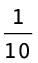
Verduidelik
hoe elkeen van hulle gedink het om die gegewe uitdrukking te
evalueer.
Natasha first simplified the expression to x + 2
+ and then
evaluated the simplified expression. Lebogang
simply substituted x = 10
in the original expression.
8.4 Kwadrate, derdemagte en wortels van uitdrukkings
VEREENVOUDIG
KWADRATE EN DERDEMAGTE
Bestudeer die
volgende voorbeeld:
(3x)2 =
3x \times 3x
= 3 \times
x \times 3 \times x
= 3 \times 3
\times x \times x
Vermenigvuldiging is
kommutatief: a \times
b = b \times a
= 9x2
Ons sê
(3x)2 vereenvoudig tot
9x2
1. Vereenvoudig die
uitdrukkings.
(a) (2x)2 (b) (2x2)2 (c) (-3y)2
= 2
\times x \times x \times 2 \times x
\times x
= -3
\times -3 \times y \times y
= 2
\times 2 \times x \times x \times x
\times x
2. Vereenvoudig die
uitdrukkings.
(a) 25x - 16x (b)
4y + y + 3y (c) a + 17a -
3a
3. Vereenvoudig.
(a) (25x -
16x)2 (b)
(4y + y + 3y)2 (c) (a + 17a -
3a)2
Bestudeer die
volgende voorbeeld:
(3x)3 =
3x \times 3x \times 3x
Betekenis van
derdemagsverheffing
= 3 \times
x \times 3 \times x \times 3 \times x
= 3 \times 3
\times 3 \times x \times x \times x
Vermenigvuldiging is
kommutatief: a \times
b = b \times a
= 27x3
Ons sê
(3x)3 vereenvoudig tot
27x3
4. Vereenvoudig die volgende:
(a) (2x)3 (b) (-x)3
= 2 \times
x \times 2 \times x \times 2 \times x
= 2 \times 2
\times 2 \times x \times x \times
x
(c) (5a)3 (d) (7y2)3
=
7y2
\times 7y2 \times 7y2
= 5 \times
a \times 5 \times a \times 5 \times
a
= 7 \times
y \times y \times 7 \times y \times
y \times 7 \times y \times y
= 5 \times 5
\times 5 \times a \times a \times
a
= 7 \times 7
\times 7 \times y \times y \times y
\times y \times y \times y
(e) (-3m)3 (f) (2x3)3
=
-3m \times
-3m \times
-3m
= 2x3 \times 2x3 \times 2x3
= -3 \times
m \times -3
\times m \times
-3 \times m
= 2
\times x
\times x \times
x \times 2
\times x
\times x \times
x \times 2
\times x
\times x \times
x
= -3 \times -3
\times -3 \times m \times m \timesm
= 2
\times 2 \times 2 \times x \times
x
\times x \times
x
\times x \times
x
\times x \times
x
\times x
5. Vereenvoudig.
(a) 5a - 2a (b)
7x + 3x (c) 4b + b
6. Vereenvoudig.
(a) (5a -
2a)3 (b)
(7x + 3x)3 (c) (4b +
b)3
(d) (13x -
6x)3 (e)
(17x + 3x)3 (f) (20y
-14y)3
Onthou altyd om te toets of
die vereenvoudigdeuitdrukking ekwivalent is aan die
gegeweuitdrukking vir ten minste drie verskillende waardesvan
die gegewe veranderlike.
VIERKANTSWORTELS EN
DERDEMAGSWORTELS VAN UITDRUKKINGS
1. Thabang en sy vriend Vuyiswa
is gevra om te vereenvoudig.
Thabang het soos volg
geredeneer:
Om die vierkantswortel van 'n getal
te bepaal is dieselfde as om vir jouself te vra: "Watter getal
word met homself vermenigvuldig?" Die getal wat met homself
vermenigvuldig word, is 2a2 en daarom is = 2a2.
Vuyiswa het soos volg
geredeneer:
Ek moet eers 2a2 \times 2a2 vereenvoudig om 4a4 te kry en dan
= 2a2 bereken.
Watter een van die twee metodes
verkies jy? Verduidelik waarom.
2. Sê of elk van die
volgende waar of onwaar is. Gee 'n rede vir jou antwoord.
(a)  = 6x (b)
= 6x (b)  = 5x2
= 5x2
3. Vereenvoudig.
(a) y6 \times y6 (b) 125x2 + 44x2
4. Vereenvoudig.
(a) 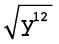 (b) 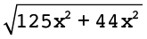
(c) 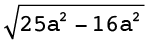 (d) 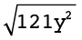
(e)  (f)
(f) 
5. Wat
beteken dit om die derdemagswortel van 8x3 geskryf as  te bepaal?
te bepaal?
6. Vereenvoudig die volgende:
(a) 2a \times 2a \times
2a (b) 10b3 \times 10b3 \times 10b3
= 2 \times 2
\times 2 \times a \times a \times
a
= 10 \times 10
\times 10 \times b3 \times
b3 \times
b3
(c) 3x3 \times 3x3 \times 3x3 (d) -3x3 \times -3x3 \times -3x3
= 3 \times 3
\times 3 \times x3 \times
x3 \times
x3
= -3 \times -3
\times -3 \times x3 \times
x3 \times
x3
7. Bepaal die volgende:
(a)  (b)
(b)
(c)  (d)
(d) 
8. Vereenvoudig die volgende
uitdrukkings:
(a) 6x3 + 2x3 (b) -m3 - 3m3 - 4m3
9. Bepaal die volgende:
(a) 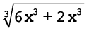 (b) 
(c) 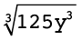 (d) 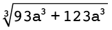
1. Vereenvoudig die volgende:
(a) 2(3b + 1) + 4 (b) 6 - (2 +
5e)
(c) 18mn + 22mn + 70mn (d) 4pqr + 3 + 9pqr
2. Evalueer elk van die volgende
uitdrukkings vir m = 10:
(a) 3m2 + m + 10 (b) 5(m2 - 5) + m2 + 25
= (3
\times 102) +
10 + 10
= 5
\times 95 + 125 = 475 + 125 = 600
3. (a) Vereenvoudig:

=
\times 4b + 6 = +
= 2b + 3
(b) Evalueer die uitdrukking
 vir b = 100.
vir b = 100.
=
2b + 3 = 200 + 3
= 203
4. Vereenvoudig.
(a) (4g)2 (b) (6y)3 (c) (7s + 3s)2
5. Bepaal die volgende:
(a) 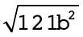 (b)  (c)
(c) 
In hierdie hoofstuk gaan jy
vergelykings oplos deur inverse bewerkings toe te pas. Jy gaan
ook vergelykings oplos wat eksponente bevat.
9.1 Dink vorentoe en terug
167
9.2 Los vergelykings op deur
optellings- en vermenigvuldigingsinverses te gebruik 170
9.3 Los vergelykings op wat
magte behels 172

9
Algebraïese vergelykings 2
9.1 Dink vorentoe en terug
DOEN EN HERSTEL WAT
GEDOEN IS
1. Voltooi die vloeidiagram deur
die uitvoergetalle te bepaal.

2. Voltooi die tabel.
|
x
|
-3
|
-2
|
0
|
5
|
17
|
|
2x
|
-6
|
-4
|
0
|
10
|
34
|
3. Evalueer 4x as:
(a) x = -7 (b) x =
10 (c) x = 0
4. (a) Voltooi die vloeidiagram deur die
invoergetalle te bepaal.
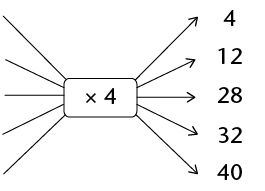
(b) Puleng het nog 'n heelgetal in die
vloeidiagram ingevoer en -68 as 'n antwoord gekry. Watter
heelgetal het sy ingevoer? Wys jou berekening.
(c) Verduidelik hoe jy gewerk het om
die invoergetalle te bepaal toe jy vraag (a) gedoen
het.
5. (a) Voltooi die tabel.
|
x
|
1
|
3
|
5
|
8
|
18
|
|
5x
|
5
|
15
|
25
|
40
|
90
|
(b) Voltooi die vloeidiagramme.
(c) Verduidelik hoe jy die tabel voltooi
het.
In algebra wil ons soms
uitdrukkings evalueer. Wanneer ons uitdrukkings
evalueer, vervang ons 'n veranderlike in die uitdrukking met
'n invoergetal om die waarde van die uitdrukking te
kry wat die ooreenstemmende uitvoergetal genoem word.
Ons sal aan hierdie proses dink as 'n doenproses.
6. Kyk weer na vrae 1 tot
5. Sê vir elke vraag of die vraag 'n doenproses of
'n herstelproses vereis het. Gee 'n verduideliking vir jou
antwoord (byvoorbeeld: invoer na uitvoer).
7. (a) Voltooi die vloeidiagramme.
(b) Wat sien jy raak?
8. (a) Voltooi die vloeidiagramme.
(b) Wat sien jy raak?
9. (a) Voltooi die vloeidiagramme.
(b) Wat sien jy raak?
10. (a) Voltooi die vloeidiagram.

(b) Watter berekeninge sal jy doen om te
bepaal wat die invoergetal was as die uitvoergetal 20 is?
Los die volgende probleme op deur te
herstel wat gedoen is om die antwoord te kry:
11. 'n Sekere getal word met 10
vermenigvuldig en die antwoord is 150. Wat is die getal?
12. Wanneer 'n sekere getal deur
5 gedeel word, is die antwoord 1. Wat is die getal?
13. Wanneer 23 by 'n sekere
getal getel word, is die antwoord 107. Wat is die
getal?
14.
Wanneer 'n sekere getal met 5 vermenigvuldig word en 2 word van
die antwoord afgetrek, is die finale antwoord 13. Wat is die
oorspronklike getal?
The number is 3 (because = 3).
Om van die uitvoerwaarde na
die invoerwaarde te beweeg word oplossing van die
vergelyking vir die onbekende genoem.
9.2 Los vergelykings op deur optellings- en
vermenigvuldigingsinverses te gebruik
BEPAAL DIE
ONBEKENDE
Kyk na die vergelyking 3x + 2
= 23.
Ons kan die vergelyking 3x + 2
= 23 in 'n vloeidiagram voorstel, waar x 'n onbekende getal
voorstel:

Wanneer jy die proses in die
vloeidiagram omkeer, begin jy met die uitvoergetal 23, trek dan
2 af en deel dan die antwoord deur 3:

Ons kan die hele omgekeerde proses
hier bo as volg neerskryf:
Trek 2 van albei kante van die vergelyking
af:
3x + 2 - 2 = 23
- 2
3x = 21
Deel albei kante deur 3:
 =
=
x = 7
Ons sê x = 7 is die oplossing van
3x + 2 = 23 want 3
\times 7 + 2 = 23. Ons sê dat x = 7 die vergelyking
3x + 2 = 23 waar
maak.
Die optellingsinverses en
vermenigvuldigingsinverses help ons om die onbekende waarde
of die invoerwaarde "op sy eie" te kry.
Die getalle +2 en -2 is
optellingsinverses (of additiewe inverses) van
mekaar. Wanneer ons 'n getal en sy optellingsinverse
bymekaartel, kry ons altyd 0.
Onthou ook:
-
•
Die
vermenigvuldigings-eienskap van 1: die produk
van enige getal en 1 is daardie getal.
-
•
Die optellingseienskap
van 0: die som van enige getal en 0 is daardie
getal.
Los die vergelykings hier onder op
deur die optellingsinverses en vermenigvuldigings-inverses te
gebruik. Kontroleer jou antwoorde.
1. x + 10 = 0 2. 49x + 2 =
100
49x + 2
– 2 = 100 – 2
 =
= 
Checking: 49
\times 2 + 2 = 98 + 2 = 100
3. 2x = 1 4. 20 = 11 - 9x
= 
20 – 20 + 9x
= 11
– 20 –9x +
9x
x = 
Checking:
–9 \times – 1 + 11 =
9 + 11 = 20
Soms moet jy gelyksoortige
terme kombineer voor jy die vergelykings kan oplos deur
optellingsinverses en vermenigvuldigingsinverses te gebruik,
soos in die voorbeeld hier onder.
Voorbeeld: Los op vir
x: 7x + 3x = 10
7x en 3x
is gelyksoortige terme en kan met een ekwivalente
uitdrukking
(7 + 3)x = 10x
vervang word.
10x =
10
 =
= 
x = 1
5. 4x + 6x = 20 6. 5x =
40 + 3x
 =
= 
 =
= 
Checking: 10
\times 2 = 20
Checking: 2
\times 20 = 40
7. 3x + 1 - x = 0 8. x
+ 20 + 4x = -55
x = 
Checking: 2 \times  =
–1
=
–1
Checking: 5 \times -15 + 20 = -75 +
20 = - 55

9.3 Los vergelykings op wat magte behels
Om 'n
eksponensiële vergelyking op te los is dieselfde
as om die vraag te vra: Tot watter eksponent moet die
grondtal verhef word om die vergelyking waar te maak?
1. Voltooi die tabel.
2. Voltooi die tabel.
Karina het die vergelyking
3x = 27 soos volg
opgelos:
Die getal 27 kan as
33
uitgedruk word, want 33 = 27.
3x = 27
Dus 3x = 33
Dus x = 3
3. Gebruik nou Karina se metode
en los op vir x in
elk van die volgende:
(a) 2x = 32 (b) 4x = 16 (c)
6x = 216 (d) 5x + 1 = 125
Jy gaan in hierdie hoofstuk
leer hoe om verskillende lyne, hoeke en figure te konstrueer of
teken. Jy gaan tekeninstrumente soos 'n liniaal gebruik om
reguit lyne te trek, 'n gradeboog om hoeke te meet en teken, en
'n passer om sirkelboë te teken wat 'n bepaalde
afstand van 'n punt af is. Jy gaan deur die verskillende
konstruksies 'n paar van die eienskappe van driehoeke en
vierhoeke ondersoek; met ander woorde, jy gaan meer uitvind oor
wat altyd waar is vir alle of sekere soorte driehoeke en
vierhoeke.
10.1 Halvering van lyne
175
10.2 Konstruksie van loodlyne
177
10.3 Halvering van hoeke
179
10.4 Konstruksie van spesiale
hoeke sonder 'n gradeboog 181
10.5 Konstruksie van driehoeke
182
10.6 Eienskappe van driehoeke
185
10.7 Eienskappe van vierhoeke
187
10.8 Konstruksie van vierhoeke
189
Kan twee sirkels
so geteken word dat die rooi lyne nie teen regte hoeke sny
nie?
10Konstruksie
van meetkundige figure
10.1 Halvering van lyne
Wanneer ons meetkundige figure
konstrueer, of teken, moet ons dikwels lyne of hoeke halveer.
Halvering beteken om iets in twee gelyke dele te
verdeel. Daar is verskillende maniere om 'n lynstuk te
halveer.
HALVEER 'N LYNStuk MET 'N
LINIAAL
1. Lees deur die volgende
stappe.
|
Stap 1: Trek
lynstuk AB en bepaal sy middelpunt.

Stap 2: Trek enige
lynstuk deur die middelpunt.
Die klein merkies op AF
en FB wys dat AF en FB ewe lank is.

|
CD word 'n
halveerlyn genoem, want dit halveer AB. AF = FB.
2. Gebruik 'n liniaal om
die volgende lynstukke te trek en halveer: AB = 6 cm en XY = 7
cm.
Jy het in Graad 6 geleer hoe om 'n
passer te gebruik om sirkels en sirkelboë (gedeeltes
van sirkels) te teken. Ons kan sirkelboë (of
boë) gebruik om 'n lynstuk te halveer.
HALVEER 'N LYNStuk MET 'N PASSER
EN LINIAAL
1. Lees deur die volgende
stappe.
|
Stap 1
Sit die passer op een eindpunt van die lynstuk (punt
A). Trek 'n boog bo en onder die lyn. (Let opdat al die
punte op die boog bo en onder die lyn dieselfde afstand
vanaf punt A af is.)
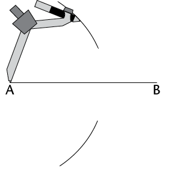
Stap 2
Sit die passer op punt B sonder om sy stelling te
verander. Trek 'n boog bo en onder die lyn sodat die
boë die eerste twee sny. (Die twee punte
waar die boë sny, is dieselfde afstand van
punt A en van punt B af.)
Stap 3
Gebruik 'n liniaal
om die punte te verbind waar die boë sny.
Hierdie lynstuk (CD) is die halveerlyn van
AB.
'n Loodlyn is 'n
lyn wat 'n ander lyn teen 'n hoek van 90°
sny.
|
Let ook op dat CD
loodreg op AB is. Dit word daarom ook 'n loodregte
halveerlyn genoem.
2. Werk in
jou oefeningboek. Gebruik 'n passer en 'n liniaal om te oefen
om loodregte halveerlyne op lynstukke te trek.
Probeer dit!
Werk in jou oefeningboek.
Gebruik net 'n gradeboog en liniaal om 'n loodregte
halveerlyn op 'n lynstuk te trek. (Onthou dat ons 'n
gradeboog gebruik om hoeke te meet.)
10.2 Konstruksie van loodlyne
'N LOODLYN VANAF 'N
GEGEWE PUNT
1. Lees deur die volgende
stappe.
|
Stap 1
Sit jou passer se
ankerpunt op die gegewe punt (punt P). Trek 'n boog oor
die lyn aan elke kant van die gegewe punt. Moenie die
passer se stelling verander as jy die tweede boog trek
nie.

|
Stap 2
Vanaf elke boog op die
lyn, trek nog 'n boog op die teenoorgestelde kant van
die lyn van waar die gegewe punt (P) is. Die twee nuwe
boë sal sny.

|
|
Stap 3
Gebruik jou liniaal om
die gegewe punt (P) met die punt te verbind waar die
boë sny (Q).

|
PQ is loodreg op AB. Ons
skryf dit ook soos volg: PQ ⊥
AB.
|
2. Gebruik jou passer en
liniaal om 'n loodlyn vanaf elkegegewe punt na die lynstuk te
trek:
'N LOODLYN BY 'N GEGEWE PUNT OP
'N LYN
1. Lees deur die volgende
stappe.
|
Stap 1
Sit jou passer se
ankerpunt op die gegewe punt (P). Trek 'n boog oor die
lyn aan weerskante van die gegewe punt. Moenie die
passer se stelling verander as jy die tweede boog trek
nie.

|
Stap 2
Maak jou passer oop sodat
dit wyer is as die afstand vanaf een van die
boë na punt P. Sit die passer se ankerpunt
op elke boog en trek 'n boog bo of onder punt P. Die
twee nuwe boë sal sny.

|
|
Stap 3
Gebruik jou liniaal om
die gegewe punt (P) en die punt waar die boë
sny (Q) te verbind.
PQ
⊥
AB
|
|
2. Gebruik jou passer en liniaal
om 'n loodlyn by die gegewe punt op elke lyn te trek:

10.3 Halvering van hoeke
Hoeke word gevorm waar enige twee
lyne ontmoet of sny. Ons gebruik grade (°) om hoeke
te meet.
MEET EN KLASSIFISEER HOEKE
In die figure hier onder het elke
hoek 'n nommer van 1 tot 9.
1. Gebruik 'n gradeboog
om die groottes van al die hoeke in elke figuur te meet. Skryf
jou antwoorde op elke figuur neer.
(a) (b)

2. Gebruik jou antwoorde om die
hoekgroottes hier onder in te vul.
 =
=
°
 =
=
°
 +
+  =
=
°
 +
+  =
=
°
 +
+  =
=
°
 +
+  +
+  =
=
°
+  =
=
°
 +
+  +
+  =
=
°
 +
+  =
=
°
 +
+  =
=
°
 +
+  +
+  =
=
°
 +
+  +
+  +
+  =
=
°
 +
+  +
+  +
+  =
=
°
 +
+  +
+  +
+  +
+  =
=
°
3. Skryf langs elke
antwoord hier bo neer watter soort hoek dit is, dit wil
sê skerp, stomp, regte, gestrekte of inspringende
hoek of 'n omwenteling.
HALVEER HOEKE SONDER 'N
GRADEBOOG
1. Lees deur die volgende
stappe.
|
Stap 1
Sit die passer se
ankerpunt op punt B, die hoekpunt van die hoek. Trek 'n
boog oor elke been van die hoek.
|
Stap 2
Sit die passer op die
punt waar een boog 'n been sny en trek 'n boog binne
die hoek. Sonder om die passer se stelling te verander,
herhaal vir die ander been sodat die twee
boë sny.

|
|
Stap 3
Gebruik 'n liniaal om die
hoekpunt met die punt te verbind waar die
boë sny (D).
DB is die halveerlyn van
A C. C.
|
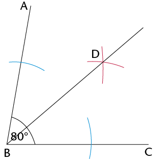
|
2. Gebruik jou passer en liniaal
om die hoeke te halveer.
Jy kan elk van die hoeke met 'n
gradeboog meet om te kyk of jy die gegewe hoek korrek
gehalveer het.

10.4 Konstruksie van spesiale hoeke sonder 'n
gradeboog
KONSTRUEER HOEKE VAN
60°, 30° EN 120°
1. Lees deur die volgende
stappe.
|
Stap 1
Trek 'n lynstuk (JK). Met
die passer se ankerpunt op punt J, trek 'n boog oor JK
om verby punt J te gaan.

|
Stap 2
Sonder om die passer se
stelling te verander, verskuif die passer na die punt
waar die boog JK sny en trek 'n boog wat die eerste een
sny.

|
|
Stap 3
Verbind punt J met die
punt waar die twee boë sny
(P).PK = 60°
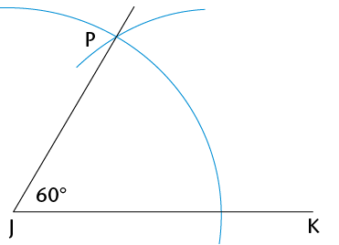
|
2. (a) Konstrueer 'n
hoek van 60° by punt B op die volgende bladsy.
Wanneer jy later meer oor die
eienskappe van driehoeke leer, sal jy verstaan waarom die
metode hier bo 'n hoek van 60° skep. Of kan jy dit
nou al uitwerk? (Wenk: Wat weet jy van gelyksydige
driehoeke?)
(b) Halveer die hoek
wat jy gekonstrueer het.
(c) Kan jy sien dat
die gehalveerde hoek uit twee hoeke van 30°
bestaan?
(d) Verleng lynstuk BC
na A. Meet dan die hoek wat aangrensend tot die hoek van
60° is.
Aangrensend beteken
"langs".
Wat is sy grootte?
(e) Die hoek van
60° en sy aangrensende hoek werk saam uit op

KONSTRUEER HOEKE VAN
90° EN 45°
1. Konstrueer 'n hoek van
90° by punt A. Kyk weer na afdeling 10.2 as jy
sukkel.
2. Halveer die
90°-hoek om 'n hoek van 45° te skep.
Blaai terug na afdeling 10.3 as jy hulp nodig het.
Uitdaging
Werk in jou oefeningboek.
Probeer om die volgende hoeke te konstrueer sonder om 'n
gradeboog te gebruik: 150°, 210° en
135°.

10.5 Konstruksie van driehoeke
In hierdie afdeling gaan jy leer hoe
om driehoeke te konstrueer. Jy sal 'n potlood, 'n gradeboog, 'n
liniaal en 'n passer nodig hê.
'n Driehoek het drie sye en drie hoeke. Ons kan
'n driehoek konstrueer as ons sommige van sy afmetings ken, dit
wil sê sy sye, sy hoeke, of party van sy sye en
hoeke.
KONSTRUEER DRIEHOEKE
Konstrueer driehoeke as drie sye gegee
word
1. Lees deur die volgende
stappe. Dit beskryf hoe om \triangle}ABC met sylengtes van 3
cm, 5 cm en 7 cm te konstrueer.
|
Stap 1
Trek een sy van die
driehoek met 'n liniaal. Die konstruksie is dikwels
makliker as jy met die langste sy begin.

|
Stap 2
Met radius 5 cm en
ankerpunt op A, trek 'n boog. Die derde hoekpunt van
die driehoek sal iewers op hierdie boog wees.

|
|
Stap 3
Met radius 3 cm en
ankerpunt B, trek 'n boog om die eerste boog te sny.
Hierdie snypunt sal die derde hoekpunt van die driehoek
wees.

|
Stap 4
Gebruik jou liniaal om
punt A en punt B te verbind aan die punt waar die
boë sny (punt C).
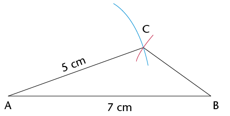
|
2. Werk in jou
oefeningboek. Volg die stappe hier bo om die volgende driehoeke
te konstrueer:
(a) \triangle}ABC met sye 6 cm, 7 cm en 4
cm
(b) \triangle}KLM met sye 10 cm, 5 cm en 8
cm
(c) \triangle}PQR met
sye 5 cm, 9 cm en 11 cm
Konstrueer driehoeke as sekere hoeke en sye
gegee word
3. Gebruik die ruwe
sketse in (a) tot (c) hier onder om akkurate driehoeke te
konstrueer deur 'n liniaal, passer en gradeboog te gebruik.
Doen die konstruksie langs elke skets.
- • Die
stippellyne wys waar jy 'n passer moet gebruik om die lengte
van 'n sy te meet.
- • Gebruik 'n
gradeboog om die grootte van die gegewe hoeke te meet.
(a) Konstrueer \triangle}ABC, met twee
hoeke en een sy gegee.

(b) Konstrueer \triangle}KLM, met
twee sye en'n
hoek gegee.
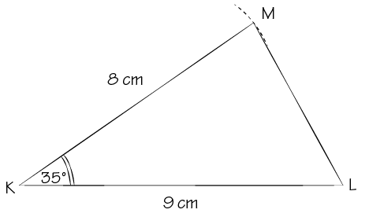
(c) Konstrueer reghoekige \triangle}PQR, met
dieskuinssy en een ander sy gegee.

4. Meet die
ontbrekende hoeke en sye van elke driehoek in 3(a) tot (c) op
die vorige bladsy. Skryf die afmetings by jou voltooide
konstruksies.
5. Vergelyk
elkeen van jou gekonstrueerde driehoeke in 3(a) tot (c) met 'n
klasmaat se driehoeke. Is die driehoeke presies dieselfde?
As driehoeke presies
dieselfde is, sê ons hulle is
kongruent.

10.6 Eienskappe van driehoeke
Die hoeke van 'n driehoek kan
dieselfde grootte of verskillende groottes wees. Die sye van 'n
driehoek kan dieselfde lengte of verskillende lengtes wees.
EIENSKAPPE VAN GELYKSYDIGE
DRIEHOEKE
1. (a) Konstrueer
\triangle}ABC langs sy ruwe skets hier onder.
(b) Meet en merk die groottes
van al sy sye en hoeke.

2.
Meet en skryf die groottes van die sye en hoeke van
\triangle}DEF hier regs neer.
3. Albei driehoeke in
vrae 1 en 2 word gelyksydige driehoeke
genoem. Bespreek met 'n klasmaat of die volgende waar is
vir 'n gelyksydige driehoek:
- • Al die sye
is ewe lank.
- • Al die
hoeke is gelyk aan 60°.
EIENSKAPPE VAN GELYKBENIGE
DRIEHOEKE
1. (a) Konstrueer \triangle}DEF met EF = 7
cm,  = 50° en
= 50° en  = 50°.
= 50°.
Konstrueer ook \triangle}JKL
met JK = 6 cm, KL = 6 cm en  = 70°.
= 70°.
(b) Meet en merk al die sye en hoeke van
elke driehoek.
2. Albei driehoeke hier
bo word gelykbenige driehoeke genoem. Bespreek met 'n
klasmaat of die volgende waar is vir 'n gelykbenige
driehoek:
- • Net twee
sye is ewe lank.
- • Net twee
hoeke is ewe groot.
- • Die twee
gelyke hoeke is teenoor die twee gelyke sye.
DIE SOM VAN DIE HOEKE IN 'N
DRIEHOEK
1.
Kyk na jou gekonstrueerde driehoeke \triangle}ABC,
\triangle}DEF en \triangle}JKL hier bo en op die vorige bladsy.
Wat is die som van die drie hoeke elke keer?
2. Het jy gevind dat die
som van die binnehoeke van elke driehoek 180° is?
Doen die volgende om te kontroleer of dit waar is vir ander
driehoeke.
(a) Konstrueer enige driehoek op 'n skoon
vel papier. Merk die hoeke A, B en C en
knip die driehoek uit.
(b) Skeur die hoeke van die driehoek netjies
af en pas hulle langs mekaar.
(c) Let op dat  ,
,  en
en  'n gestrekte hoek vorm. Voltooi:
+ +
'n gestrekte hoek vorm. Voltooi:
+ +  =
=
°
Ons kan aflei dat die som
van die binnehoeke van 'n driehoek altyd gelyk is aan
180°.
10.7 Eienskappe van vierhoeke
'n Vierhoek is enige geslote figuur
met vier reguit sye. Ons klassifiseer vierhoeke volgens hulle
sye en hoeke. Ons let op watter sye ewewydig, loodreg of gelyk
is. Ons let ook op watter hoeke ewe groot is.
EIENSKAPPE VAN VIERHOEKE
1. Meet en skryf die groottes van
al die hoeke en die lengtes van al die sye van elke vierhoek
hier onder neer.
|
Vierkant

|
Reghoek

|
|
Parallelogram

|
Ruit
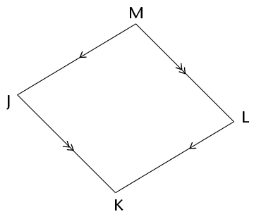
|
|
Trapesium
|
Vlieër

|
2. Gebruik jou antwoorde
in vraag 1. Maak 'n ✓ in die
toepaslike blokkie hier onder om te wys watter eienskap korrek
vir elke figuur is.
|
|
|
|
|
|
|
|
|
Net een paar sye is ewewydig
|
|
|
|
|
|
✓
|
|
Teenoorstaande sye is ewewydig
|
✓
|
✓
|
✓
|
✓
|
|
|
|
Teenoorstaande sye is ewe lank
|
✓
|
✓
|
✓
|
✓
|
|
|
|
Alle sye is ewe lank
|
|
|
✓
|
✓
|
|
|
|
Twee pare aangrens-ende sye is ewe lank
|
|
|
✓
|
✓
|
✓
|
|
|
Teenoorstaande hoeke is ewe groot
|
✓
|
✓
|
✓
|
✓
|
|
|
|
Alle hoeke is gelyk
|
|
✓
|
|
✓
|
|
|
SOM VAN DIE HOEKE IN 'N
VIERHOEK
1. Tel die vier hoeke van
elke vierhoek op die vorige bladsy bymekaar. Wat merk jy op oor
die som van die hoeke van elke vierhoek?
2. Het jy gevind dat die
som van die binnehoeke van elke vierhoek gelyk is aan
360°? Doen die volgende om te kontroleer of dit waar
is vir ander vierhoeke.
(a) Gebruik 'n liniaal om enige vierhoek op
'n skoon vel papier te konstrueer.
(b) Merk die hoeke A, B, C en D. Knip die
vierhoek uit.
(c) Skeur die hoeke van die vierhoek netjies
af en pas hulle langs mekaar.
(d) Wat sien jy raak?
Ons kan aflei dat die som
van die binnehoeke van 'n vierhoek altyd 360°
is.
10.8 Konstruksie van vierhoeke
Jy het in afdeling 10.2 geleer hoe om
loodlyne te konstrueer. As jy weet hoe om ewewydige lyne te
konstrueer, behoort jy enige vierhoek akkuraat te kan
konstrueer.
KONSTRUEER EWEWYDIGE LYNE OM
VIERHOEKE TE TEKEN
1. Lees deur die volgende
stappe.
|
Stap 1
Merk 'n punt D vanaf
lynstuk AB. Hierdie punt D sal op die lyn wees wat
ewewydig aan AB sal wees. Trek 'n lyn vanaf A deur
D.

|
Stap 2
Met ankerpunt op A, trek
'n boog wat AD en AB sny. Hou dieselfde passerstelling
en trek 'n boog vanaf punt D soos gewys word.

|
|
Stap 3
Stel die passer se wydte
op die afstand tussen die punte waar die eerste boog
AD en AB sny. Met ankerpunt op die punt
waar die tweede boog AD sny, trek 'n derde boog om die
tweede boog te sny.
|
Stap 4
Trek 'n lyn van D af deur
die punt waar die twee boë sny. DC is
ewewydig aan AB.
|
2. Oefen in jou oefeningboek om
'n parallelogram, vierkant en ruit te konstrueer.
3. Gebruik
'n gradeboog om te probeer om vierhoeke met ten minste een stel
ewewydige sye te teken.
1. Doen die volgende konstruksie in
jou oefeningboek.
(a) Gebruik 'n passer en
liniaal om 'n gelyksydige \triangle}ABC met sye 9 cm te
konstrueer.
(b) Halveer  sonder om 'n gradeboog
te gebruik. Die halveerlyn sny AC by punt D.
sonder om 'n gradeboog
te gebruik. Die halveerlyn sny AC by punt D.
(c) Gebruik 'n gradeboog om
A B te meet. Skryf die afmeting
op die tekening.
B te meet. Skryf die afmeting
op die tekening.
2. Benoem die volgende soorte
driehoeke en vierhoeke.
A B C
D E F
3. Watter van
die volgende vierhoeke pas by elke beskrywing hier onder? (Daar
sal dikwels meer as een antwoord wees.)
parallelogram; reghoek; ruit;
vierkant; vlieër; trapesium
(a) Alle sye is ewe lank en alle hoeke is ewe groot.
(b) Twee pare aangrensende sye is ewe lank.
(c) Een paar sye is ewewydig.
(d) Teenoorstaande sye is ewewydig.
(e) Teenoorstaande sye is ewewydig en alle hoeke is ewe
groot.
(f) Alle sye is ewe
lank.
Uitdaging
1. Konstrueer hierdie
driehoeke:
(a) \triangle}STU, met drie
hoeke gegee:  = 45°,
= 45°,  = 70° en = 65°.
= 70° en = 65°.
(b) \triangle}XYZ, met twee sye
en die hoek teenoor een van die sye gegee:  = 50°, XY = 8 cm en XZ = 7
cm.
= 50°, XY = 8 cm en XZ = 7
cm.
2. Kan jy meer as een skets vir
elkedriehoek hier bo kry? Verduidelik jou
bevindings aan 'n klasmaat.
In hierdie hoofstuk gaan jy
meer leer oor verskillende soorte driehoeke en vierhoeke en
hulle eienskappe. Jy gaan figure wat kongruent is en figure wat
gelykvormig is ondersoek. Jy gaan ook jou kennis van die
eienskappe van 2D-figure gebruik om meetkundige probleme op te
los.
11.1 Soorte driehoeke 193
11.2 Onbekende hoeke en sye
van driehoeke 195
11.3 Soorte vierhoeke en hulle
eienskappe 200
11.4 Onbekende hoeke en sye
van vierhoeke 204
11.5 Kongruensie 205
11.6 Gelykvormigheid 207


11
Meetkunde van 2D-figure
11.1 Soorte driehoeke
Jy weet teen hierdie tyd dat 'n
driehoek 'n geslote 2D-figuur met drie reguit sye is. Ons kan
verskillende soorte driehoeke volgens die lengtes van hulle sye
en volgens die groottes van hulle hoeke klassifiseer of
benoem.
BENOEM DRIEHOEKE VOLGENS HULLE
SYE
1. Pas die naam van elke soort
driehoek by die korrekte beskrywing.
|
|
|
|
Gelykbenige
driehoek
|
Al die sye
is ewe lank.
|
|
Ongelykbenige driehoek
|
Geen sye is
ewe lank nie.
|
|
Gelyksydige
driehoek
|
Twee sye is
ewe lank.
|
2. Benoem elke soort driehoek
deur na sy sye te kyk.

BENOEM DRIEHOEKE VOLGENS HULLE
HOEKE
Onthou die volgende soorte hoeke:
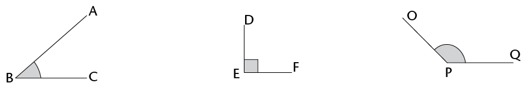
Skerphoek Regte hoek Stomphoek
(< 90°)
(= 90°) (tussen 90° en
180°)
Bestudeer die volgende driehoeke en
beantwoord dan die vrae:
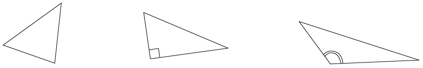
Skerphoekige driehoek Reghoekige driehoek
Stomphoekige driehoek
1. Is al die hoeke van 'n
driehoek altyd ewe groot?
2. As 'n driehoek 'n
stomphoek het, word dit 'n
driehoek genoem.
3. As 'n driehoek net
skerphoeke het, word dit 'n
driehoek genoem.
4. As 'n driehoek 'n hoek
het wat gelyk is aan
, word dit 'n reghoekige
driehoek genoem.
ONDERSOEK DIE HOEKE EN SYE VAN
DRIEHOEKE
1. (a) Wat is die som van die
binnehoeke van 'n driehoek?
(b) Kan 'n driehoek twee regte hoeke
hê?
As jy nie die antwoorde in 1(b)
en (c) kan uitwerk nie, probeer om die driehoeke te
konstrueer om die antwoorde te kry.
Verduidelik jou antwoord.
(c) Kan 'n driehoek meer as een stomphoek
hê? Verduidelik jou antwoord.
2. Kyk na die driehoeke hier
onder. Die bogies wys watter hoeke is gelyk.
Gelyksydige driehoek Gelykbenige driehoek
Reghoekige driehoek
(a) \triangle}ABC is 'n gelyksydige
driehoek. Wat sien jy raak as jy na sy hoeke kyk?
(b) \triangle}FEM is 'n gelykbenige
driehoek. Wat sien jy raak as jy na sy hoeke kyk?
(c) \triangle}JKL is 'n
reghoekige driehoek. Is sy langste sy teenoor die
90°-hoek?
(d) Konstrueer enige drie reghoekige
driehoeke op 'n vel papier. Is die langste sy altyd teenoor die
90° hoek?
Eienskappe van
driehoeke:
Binnehoeke is die hoeke
binne-in 'n geslote figuur, nie die hoeke aan die buitekant
nie.

11.2 Onbekende hoeke en sye van driehoeke
Jy kan dit wat jy reeds oor driehoeke
weet gebruik om ander inligting te verkry. As jy nuwe inligting
uitwerk, moet jy altyd redes gee vir die bewerings wat jy maak.
Kyk na die voorbeelde hier onder. Onbekende hoeke en sye is
uitgewerk nadat sekere inligting gegee is. Die rede vir elke
bewering word tussen vierkantige hakies geskryf.

=  =
=  = 60° [Hoeke in 'n
gelyksydige \triangle} = 60°]
= 60° [Hoeke in 'n
gelyksydige \triangle} = 60°]
DE = DF [Gegee]
=  [Hoeke teenoor die gelyke sye van 'n
gelykbenige \triangle} is ewe groot]
[Hoeke teenoor die gelyke sye van 'n
gelykbenige \triangle} is ewe groot]
 = 55° [Die som van die
binnehoeke van 'n \triangle} = 180°; so
= 55° [Die som van die
binnehoeke van 'n \triangle} = 180°; so
 = 180° -
40° - 85°]
= 180° -
40° - 85°]
Jy kan die volgende redes verkort op
die maniere wat gewys word:
- • Som van
binnehoeke (∠e) van 'n
driehoek (\triangle}) = 180°:
binne∠e van
\triangle}
- •
Gelykbenige driehoek het 2 sye en 2 hoeke wat gelyk is:
gelykbenige \triangle}
- •
Gelyksydige driehoek het 3 sye en 3 hoeke wat gelyk is:
gelyksydige \triangle}
- • Hoeke wat
'n reguit lyn vorm = 180°: reguit lyn
WERK ONBEKENDE HOEKE EN SYE
UIT
Bepaal die groottes van onbekende
hoeke en sye in die volgende driehoeke. Gee altyd redes vir
elke bewering.
|
1. Bepaal
 . .

|
 + +  + +  = =
[binne∠e van
'n \triangle}]
50° +
+
 = =
145° +  = =
 = =
– 145°
 = =
|
|
2. Bepaal
 . .

|
+
+  = 180° [Interior
∠s
of a \triangle}] = 180° [Interior
∠s
of a \triangle}]
45° +  + 60° =
180° + 60° =
180°
 = 180° -
45° - 60° = 180° -
45° - 60°
 = 75° = 75°
|
|
3. (a) Bepaal KM.
(b) Bepaal  . .

|
(b) =  = 38° [Isosceles
\triangle}] = 38° [Isosceles
\triangle}]
+
+  = 180° [Interior
∠s
of a \triangle}] = 180° [Interior
∠s
of a \triangle}]
 + 38° +
38° = 180° + 38° +
38° = 180°
 = 180° -
38° - 38° = 180° -
38° - 38°
 = 104° = 104°
|
|
4. Wat is die grootte van
?

|
+
+  = 180° [Interior
∠s
of a \triangle}] = 180° [Interior
∠s
of a \triangle}]
 + 90° +
32° = 180° + 90° +
32° = 180°
 = 58° = 58°
|
|
5. (a) Bepaal CB.
(b) Bepaal  as as  = 50°. = 50°.

|
(a) CB = CA = 8 cm [Isosceles \triangle}]
(b) =  = 50° = 50°
+
+  = 180° [Interior
∠s
of a \triangle}] = 180° [Interior
∠s
of a \triangle}]
 + 50° +
50° = 180° + 50° +
50° = 180°
 = 180° -
50° - 50° = 180° -
50° - 50°
 = 80° = 80°
|
|
6. (a) Bepaal DF.
(b) Bepaal as = 100°.
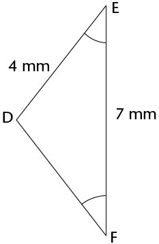
|
(a) DF = DE = 4 mm [Isosceles \triangle}]
(b) + +  = 180° [Interior
∠s
of a \triangle}] = 180° [Interior
∠s
of a \triangle}]
100° + +  = 180° = 180°
2 = 180° -
100° = 180° -
100°
 = 80° \div 2 = 80° \div 2
 = 40° = 40°
|
WERK NOG ONBEKENDE HOEKE EN SYE
UIT
|
1. Bereken die groottes
van  en en  . .

|
=
 [Isosceles \triangle}] [Isosceles \triangle}]
24° + +  = 180° [Interior
∠s
of a \triangle}] = 180° [Interior
∠s
of a \triangle}]
+
 = 180° -
24° = 180° -
24°
2 = 156° = 156°
 = 78° = 78°
 = 78° = 78°
|
|
2. Bereken die grootte
van x.

|
=
 = x [Isosceles
\triangle}] = x [Isosceles
\triangle}]
80° + x + x = 180°
[Interior ∠s
of a \triangle}]
|
|
3. KLM is 'n reguit lyn.
Bereken die groottes van x en y.
|
|

|
100° + 50° + x = 180°
[Interior ∠s
of a \triangle}]
30° + y = 180°
[Straight line]
|
|
4. Hoek b en 'n hoek van
130° vorm 'n gestrekte hoek. Bereken die
groottes van a en b.
|
|
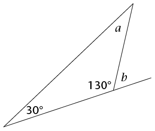
|
130° + b = 180°
[straight line]
130° + 30° + a = 180°
[Interior ∠s
of a \triangle}]
|
|
5. Hoeke m
en n vorm 'n gestrekte hoek. Bereken
die groottes van m en
n.
|
|

|
m =
60° [equilateral \triangle}]
m +
n =
180° [straight line]
|
|
6. BCD is 'n reguit lyn.
Bereken die grootte van x.
|
|

|
=
 = x [equilateral
\triangle}] = x [equilateral
\triangle}]
A B = 180° -
68° [straight line] B = 180° -
68° [straight line]
A B = 112° B = 112°
|
|
7. Bereken die grootte
van x en dan
die grootte van  . .
|
|
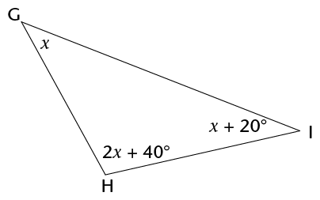
|
x +
(2x +
40°) + (x + 20°) =
180°
[Interior ∠s
of a \triangle}]
 = 2x + 40° = 2x + 40°
 = 2(30°) +
40° = 2(30°) +
40°
 = 100° = 100°
|
|
8. Bereken die grootte
van  . .
|
|

|
(x +
10°) + (2x - 30°) +
(2x -
50°) = 180°
[Interior ∠s
of a \triangle}]
5x =
180° + 30° + 50° -
10°
 = 2(50°) -
30° = 2(50°) -
30°
 = 70° = 70°
|
|
9. DNP is 'n reguit lyn.
Bereken die groottes van x en y.
|
|

|
NP = MN = 56°
[Isosceles \triangle}]
x +
56° + 56° = 180°
[Interior ∠s
of a \triangle}]
MD = 180° -
68° [Straight line]
M D = 112° D = 112°
N D = NM = y [Isosceles
\triangle}] D = NM = y [Isosceles
\triangle}]
y +
y +
112° = 180° [Interior
∠s
of a \triangle}]
|
11.3 Soorte vierhoeke en hulle eienskappe
'n Vierhoek is 'n figuur met vier
reguit sye wat by vier hoekpunte ontmoet. In baie vierhoeke het
al vier die sye verskillende lengtes en het die hoeke
verskillende groottes.
Jy het vantevore met die volgende soorte
vierhoeke gewerk –
sommige van hulle het
gelyke sye en gelyke hoeke:
-
•
parallelogramme
-
•
reghoeke
-
•
vlieërs
-
•
ruite
-
•
vierkante
-
•
trapesiums.
DIE EIENSKAPPE VAN VERSKILLENDE
SOORTE VIERHOEKE
1. In elke vraag hier
onder word verskillende voorbeelde van 'n bepaalde soort
vierhoek gegee. Identifiseer in elke geval die soort vierhoek.
Beskryf die eienskappe van elke soort deur stellings oor die
lengtes en rigtings van die sye te maak, asook oor die groottes
van die hoeke. Dit mag nodig wees om afmetings te neem om dit
te kan doen.
Vraag 1(a)

Vraag 1(b)

Vraag 1(c)

Vraag 1(d)

Vraag 1(e)

Vraag 1(f)
2. Gebruik jou antwoorde
en die tekeninge in vraag 1 om te bepaal of die volgende
stellings waar (W) of onwaar (O) is.
(a) 'n Reghoek is 'n
parallelogram.
(b) 'n Vierkant is 'n
parallelogram.
(c) 'n Ruit is 'n
parallelogram.
(d) 'n Vlieër is 'n
parallelogram.
(e) 'n Trapesium is 'n
parallelogram.
(f) 'n Vierkant is 'n
ruit.
(g) 'n Vierkant is 'n
reghoek.
(h) 'n Vierkant is 'n
vlieër.
(i) 'n Ruit is 'n
vlieër.
(j) 'n Reghoek is 'n ruit.
(k) 'n Reghoek is 'n
vierkant.
'n Konvensie is iets
(soos 'n definisie of metode) waaroor die meeste mense
saamstem, en wat hulle aanvaar en volg.
As 'n vierhoek al die eienskappe van 'n ander
vierhoek het, kan jy dit in terme van die ander vierhoek
definieer, soos jy hier bo vasgestel het.
3. Hier is 'n paar konvensionele
definisies van vierhoeke:
- • 'n
Parallelogram is 'n vierhoek met twee teenoorstaande
sye ewewydig.
- • 'n
Reghoek is 'n parallelogram met al vier hoeke gelyk
aan 90°.
- • 'n
Ruit is 'n parallelogram met al vier sye ewe
lank.
- • 'n
Vierkant is 'n reghoek met al vier sye ewe lank.
- • 'n
Trapesium is 'n vierhoek met een paar teenoorstaande
sye ewewydig.
- • 'n
Vlieër is 'n vierhoek met twee pare
aangrensende sye ewe lank.
Skryf ander definisies neer wat
vir hierdie vierhoeke werk.
(a) Reghoek:
(b) Vierkant:
(c) Ruit:
(d) Vlieër:
(e) Trapesium:
11.4 Onbekende hoeke en sye van vierhoeke
BEPAAL ONBEKENDE
HOEKE EN SYE
Bepaal die lengte van al die
onbekende sye en hoeke in die volgende vierhoeke.
Gee redes om jou bewerings te staaf. (Onthou ook dat die som
van die hoeke van 'n vierhoek 360° is.)
|
1.

|
|
|
2.

|
|
|
3. ABCD is 'n
vlieër.

|
|
|
4. Die omtrek van RSTU is
23 cm.

|
|
|
5. PQRS is 'n reghoek en
het 'n omtrek van 40 cm.

|

11.5 Kongruensie
WAT IS
KONGRUENSIE?
1. \triangle}ABC word in die
vertikale lyn (spieël) gereflekteer om \triangle}KLM
te gee.
Is die grootte en vorm van die
twee driehoeke presies dieselfde?
2. \triangle}MON word
90° om punt F geroteer om vir jou \triangle}TUE te
gee.
Is die grootte en vorm van
\triangle}MON en \triangle}TUE presies dieselfde?
3. Vierhoek ABCD word 6 eenhede
na regs en 1 eenheid afwaarts verplaas om vierhoek XRZY te
gee.
Is ABCD en XRZY presies
dieselfde?
In die vorige aktiwiteit is elk van
die figure getransformeer (gereflekteer, geroteer of
getransleer) om 'n tweede figuur te gee. Die tweede figuur in
elke paar het dieselfde hoeke, sylengtes,
grootte en oppervlakte as die eerste figuur. Die tweede
figuur is dus 'n beeld van die eerste figuur.
Die woord kongruent kom
van die Latynse woord congruere af, wat beteken "om
saam te stem". Figure is kongruent as hulle perfek op mekaar
pas wanneer hulle bo-op mekaar gesit word.
Wanneer een figuur 'n beeld
van 'n ander figuur is, sê ons die twee figure is
kongruent.
Die simbool vir kongruent
is: ≡
Notasie van kongruente figure
Wanneer ons figure benoem wat
kongruent is, benoem ons hulle so dat die passende, of
ooreenstemmende, hoeke in dieselfde volgorde is. Byvoorbeeld,
in \triangle}ABC en \triangle}KLM op die vorige
bladsy sien ons:
Ons kan nie aanvaar dat
veelhoeke kongruent is as die hoeke van die veelhoeke ewe
groot is nie. Jy sal in Graad 9 oor die voorwaardes van
kongruensie leer.
 is kongruent aan (pas by en is
gelyk aan)
is kongruent aan (pas by en is
gelyk aan)  .
. is kongruent aan
.
is kongruent aan
. is kongruent aan
is kongruent aan
 .
.
Net so vir die ander pare figure op
die vorige bladsy:\triangle}MON≡\triangle}ETU
en ABCD≡XRZY.
Die notasie van kongruente figure wys
ook watter sye van die twee figure ooreenstem en gelyk is.
Byvoorbeeld, \triangle}ABC ≡
\triangle}KML wys dat:
AB = KM, BC = ML en AC = KL
Die verkeerde notasie
\triangle}ABC ≡
\triangle}KLM sal die volgende verkeerde inligting gee:
 =
=  ,
,  =
=  , AB = KL, en AC = KM.
, AB = KL, en AC = KM.
IDENTIFISEER KONGRUENTE HOEKE EN
SYE
Skryf neer watter hoeke en sye is
gelyk tussen elke paar kongruente figure.
|
1. \triangle}PQR
≡
\triangle}UCT
|
2. \triangle}KLM
≡
\triangle}UWC
|
|
3. \triangle}GHI
≡
\triangle}QRT
|
4. \triangle}KJL
≡
\triangle}POQ
|
11.6 Gelykvormigheid
Jy het in Graad 7 geleer dat twee
figure gelykvormig is wanneer hulle dieselfde
vorm het (as hulle hoeke ewe groot is) maar dat hulle
verskillende groottes mag wees. Die sye van een figuur
is proporsioneel langer of korter as die sye van die ander
figuur; dit wil sê, die lengte van elke sy word deur
dieselfde getal gedeel of daarmee vermenigvuldig. Ons
sê een figuur is 'n vergroting of 'n verkleining van
die ander figuur.
KONTROLEER VIR
GELYKVORMIGHEID
1. Kyk na die reghoeke hier onder
en beantwoord die vrae wat volg.
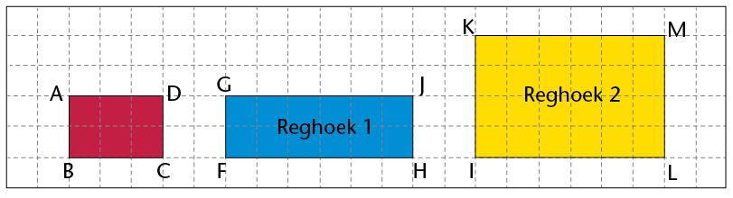
(a) Kyk na reghoek 1 en
ABCD:
Hoeveel keer is FH langer as
BC?
Hoeveel keer is GF langer as
AB?
(b) Kyk na reghoek 2 en
ABCD:
Hoeveel keer is IL langer as
BC?
Hoeveel keer is LM langer as
CD?
(c) Is reghoek 1 of reghoek 2 'n vergroting
van reghoek ABCD? Verduidelik jou antwoord.
2. Kyk na die driehoeke hier
onder en beantwoord die vrae wat volg.

(a) Hoeveel keer is:
-
• FG
langer as BC?
HF langer as AB?
-
• HG
langer as AC?
IK korter as BC?
-
• JI
korter as AB?
JK korter as AC?
(b) Is \triangle}HFG 'n vergroting van
\triangle}ABC? Verduidelik jou antwoord.
(c) Is \triangle}JIK 'n verkleining van
\triangle}ABC? Verduidelik jou antwoord.
In
vraag 1 van die vorige aktiwiteit is reghoek KILM 'n vergroting
van reghoek ABCD. ABCD is dus gelykvormig aan KILM. Die simbool
vir "is gelykvormig aan" is: ///. Ons skryf dus:
ABCD
/// KILM.
Die driehoeke op die vorige bladsy is ook
gelykvormig. \triangle}HFG is 'n vergroting van \triangle}ABC
en \triangle}JIK is 'n verkleining van \triangle}ABC.
In \triangle}ABC en \triangle}HFG is
 = 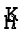,
= 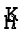,  =
=  en
en  =
=  . Ons skryf dit dus soos volg:
\triangle}ABC /// \triangle}HFG. Net so
is \triangle}ABC /// \triangle}JIK.
. Ons skryf dit dus soos volg:
\triangle}ABC /// \triangle}HFG. Net so
is \triangle}ABC /// \triangle}JIK.
Gelykvormige figure
is figure wat dieselfde hoeke (dieselfde vorm) het maar nie
noodwendig dieselfde grootte is nie.
GEBRUIK EIENSKAPPE VAN
GELYKVORMIGE EN KONGRUENTE FIGURE
1. Is die driehoeke in elke paar
gelykvormig? Gee 'n rede vir elke antwoord.

2. Is
\triangle}RTU /// \triangle}EFG? Gee 'n rede vir
jou antwoord.
3. \triangle}PQR ///
\triangle}XYZ. Bepaal die lengte van XZ en XY.
4. Is die volgende stellings waar
of onwaar? Verduidelik jou antwoorde.
(a) Figure wat kongruent is, is
gelykvormig.
(b) Figure wat gelykvormig is, is
kongruent.
(c) Alle reghoeke is gelykvormig.
(d) Alle vierkante is gelykvormig.
1. Bestudeer die driehoeke hier onder
en beantwoord die volgende vrae:
(a) Merk die
korrekte antwoord. \triangle}ABC is:
 skerphoekig en gelyksydig
skerphoekig en gelyksydig
 stomphoekig en
ongelykbenig
stomphoekig en
ongelykbenig
skerphoekig en gelykbenig
 reghoekig en gelykbenig.
reghoekig en gelykbenig.
(b) As AB = 40 mm, wat is
die lengte van AC?
(c) As  = 80°, wat is die grootte
van
= 80°, wat is die grootte
van  en van
en van  ?
?
(d) \triangle}ABC ≡
\triangle}FDE. Benoem al die sye in die twee driehoeke wat
gelyk is aan AB.
(e) Benoem die sy wat
gelyk is aan DE.
(f) As  40° is, wat is die grootte
van
40° is, wat is die grootte
van  ?
?
2. Kyk na figure JKLM en PQRS. (Gee
redes vir jou antwoorde hier onder.)

(a) Watter soort vierhoek
is JKLM?
Parallelogram. Opposite sides parallel.
(b) Is JKLM
///
PQRS?
Yes. Corresponding side are enlarged
in the same proportion.
(c) Wat is die grootte
van ?
115°. Opposite angles of
parallelogram.
(d) Wat is die grootte van ?
 = 65° [Opposite angles
of parallelogram.]
= 65° [Opposite angles
of parallelogram.]
 =
=  = 65° [Corresponding
angles of similar figures].
= 65° [Corresponding
angles of similar figures].
(e) Wat is die lengte van
KL?
KL = 6 cm [Opposite sides of
parallelogram].
As jy 'n veelhoek
vergrootof verklein, moet jy al sy sye proporsioneel, of
in dieselfde verhouding, vergroot of verklein.
Dit beteken dat jy elke lengte
deur dieselfde getal deel of daarmee vermenigvuldig.
In hierdie hoofstuk gaan jy
die verwantskappe ondersoek wat ontstaan wanneer reguit lyne
bymekaarkom of mekaar sny. Jy gaan kyk na hoeke wat gevorm word
deur loodregte lyne, deur enige twee lyne wat kruis, en deur 'n
derde lyn wat twee ewewydige lyne kruis. Jy gaan leer van
regoorstaande hoeke, ooreenkomstige hoeke, verwisselende hoeke
en ko-binnehoeke. Jy sal 'n stel hoeke as sulks kan
klassifiseer, en jy gaan jou kennis gebruik om onbekende hoeke
in meetkundige figure te bereken.
12.1 Hoeke op 'n reguit lyn
213
12.2 Regoorstaande hoeke
216
12.3 Lyne wat gesny word deur
'n snylyn 219
12.4 Ewewydige lyne wat gesny
word deur 'n snylyn 222
12.5 Bepaal onbekende hoeke op
ewewydige lyne 224
12.6 Los meer meetkundige
probleme op 227
[to come]
12
Meetkunde van reguit lyne
12.1 Hoeke op 'n reguit lyn
SOM VAN HOEKE OP 'N
REGUIT LYN
In die figure hier onder is die hoeke
genommer van 1 tot 5.
1. Gebruik 'n gradeboog
om die grootte van al die hoeke in elke figuur te meet. Skryf
jou antwoord op die toepaslike plek op die figuur.
A
B
2. Gebruik jou antwoorde om die
hoekgroottes hier onder in te vul.
(a)
 +
+  =
=
° (b)  +
+  + =
+ =
°
Die som van die hoeke wat
op 'n reguit lyn gevorm word is gelyk aan 180°
(afgekort: ∠e op reguit
lyn).
Wanneer twee lyne loodreg
op mekaar is, is die supplementêre aangrensende
hoeke 90° elk.
BEREKEN ONBEKENDE HOEKE OP
REGUIT LYNE
Bereken die grootte van die onbekende
hoeke hier onder. Stel in elke geval 'n gepaste vergelyking op
om die meetkundeprobleme op te los. Onthou om altyd 'n rede te
gee vir elke stelling wat jy maak.
|
1. Bereken die waarde van
a.

|
a + 63°
=
[∠e
op reguit lyn]
a =
- 63°
=
|
|
2. Bereken die waarde van
x.
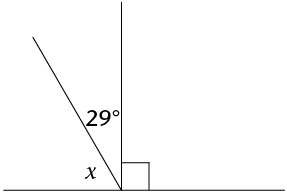
|
x +
29° + 90° = 180°
[∠s
on a straight line]
|
|
3. Bereken die waarde van
y.

|
|
BEREKEN NOG ONBEKENDE HOEKE OP
REGUIT LYNE
|
1. Bereken:
(a) x
(b) E B B

|
|
|
2. Bereken:
(a) m
(b) S R R

|
|
|
3. Bereken:
(a) x
(b) H F F

|
|
|
4. Bereken:
(a) k
(b) TP

|
|
|
5. Bereken:
(a) p
(b) J R R

|
|

12.2 Regoorstaande hoeke
WAT IS REGOORSTAANDE
HOEKE?
1. Gebruik 'n gradeboog
om al diehoeke in die figuur te meet. Dui jou antwoorde op die
figuur aan.
2. Let op
watter hoeke ewe groot is, en hoe daardie gelyke hoeke gevorm
is.
Regoorstaande hoeke
(regoorst. ∠e)
is die hoeke wat regoor mekaar is wanneer twee lyne sny.

BEREKEN ONBEKENDE HOEKE
Bereken die onbekende hoeke in die
volgende figure. Gee 'n rede vir elke stelling wat jy maak.
|
1. Bereken x,
y en z.

|
x =
° [regoorst.
∠e]
y + 105° =
° [∠e op
reguit lyn]
y =
-
105°
=
z =
[regoorst. ∠e]
|
|
2. Bereken j,
k en l.

|
|
|
3. Bereken a,
b, c en d.

|
|
VERGELYKINGS MET REGOORSTAANDE
HOEKE
Regoorstaande hoeke is altyd gelyk.
Ons kan hierdie eienskap gebruik om vergelykings op te stel,
wat dan opgelos kan word om die waarde van 'n onbekende
veranderlike te bereken.
|
1. Bereken die waarde van
m.

|
m + 20°
= 100° [regoorst. ∠e]
m =
100° - 20°
=
|
|
2. Bereken die waarde van
t.

|
|
|
3. Bereken die waarde van
p.

|
|
|
4. Bereken die waarde van
z.

|
|
|
5. Bereken die waarde van
y.

|
|
|
6. Bereken die waarde van
r.

|
|

12.3 Lyne wat gesny word deur 'n snylyn
PARE HOEKE WAT DEUR
‘N SNYLYN GEVORM WORD
'n Snylyn is 'n lyn wat minstens
twee ander lyne sny.
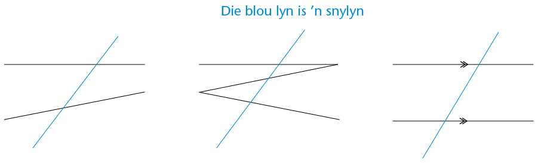
Wanneer 'n snylyn twee lyne sny, kan
'n mens die stelle hoeke wat op die twee lyne gevorm word
vergelyk deur na hulle posisies te kyk.
Die hoeke wat aan dieselfde kant van
die snylyn in ooreenstemmende posisies is,
word ooreenkomstige hoeke (ooreenk.
∠e) genoem. In die figuuris die
pare ooreenkomstige hoeke:
- • a
en e
- • b
en f
- • d
enh
- • c
en g.
1. In die figuur is
a en e albei links van diesnylyn en bokant 'n
lyn. Beskryf ook sodie ligging van die orige pare
ooreenkomstige hoeke. Die eerste een is vir jou gedoen.
b en f:
d en h:
c
en g:
Verwisselende hoeke (verw. ∠e)
lê aan weerskante van die snylyn, maar is nie
aangrensend of regoorstaande nie. Wanneer die verwisselende
hoeke tussen die twee lyne lê, word hulle
verwisselende
binnehoeke genoem. In die figuur is die pare
verwisselende binnehoeke:
Wanneer die
verwisselende hoeke buite dietwee lyne lê, word
hulle verwisselendebuitehoeke genoem.
In die figuur is die pareverwisselende buitehoeke:
2.
Beskryf die ligging van die volgende pare verwisselende
hoeke:
d en
f:
c en
e:
a en
g:
b en
h:
Ko-binnehoeke
(ko-binne∠e)
lê aan dieselfdekant van die snylyn en tussen die
twee lyne. Indie figuur is die pare ko-binnehoeke:
3.
Beskryf die ligging van die volgende pareko-binnehoeke:
d en e:
c en f:
IDENTIFISEER SOORTE HOEKE
In die diagram hier onder word twee
lyne deur 'n snylyn gesny.

Skryf die volgende pare hoeke
neer:
1. twee
pare ooreenkomstige hoeke:
2. twee
pare verwisselende binnehoeke:
3. twee
pare verwisselende buitehoeke:
4. twee
pare ko-binnehoeke:
5. twee pare regoorstaande
hoeke:
12.4 Ewewydige lyne wat gesny word deur 'n snylyn
ONDERSOEK
HOEKGROOTTES
In die figuur links onder is EF 'n
snylyn deur AB en CD. In die figuur regs is PQ 'n snylyn deur
die ewewydige lyne JK en LM.

1. Gebruik 'n gradeboog
om die groottes van al die hoeke in albei figure te meet. Dui
jou antwoorde aan op die figure.
2. Gebruik jou metings om die
volgende tabel te voltooi.
|
|
|
|
|
Ooreenk.
∠e
|
 = =
;
 = =
 = =
;
=
 = =
;
 = =
 = =
;
 = =
|
 = =
;
 = =
 = =
;
 = =
 = =
;
 = =
 = =
;
 = =
|
|
Verw.
binne∠e
|
 = =
;
 = =
=
;
 = =
|
 = =
;
 = =
 = =
;
 = =
|
|
Verw.
buite∠e
|
 = =
;
 = =
 = =
;
 = =
|
 = =
;
 = =
 = =
;
 = =
|
|
Ko-binne∠e
|
 + +  = =
 + +  = =
|
 + +  = =
 + = + =
|
3. Kyk na jou voltooide
tabel in vraag 2. Wat kom jy agter van die verskillende
hoekpare wanneer 'n snylyn ewewydige lyne sny?

Wanneer lyne ewewydig is,
is:
BEPAAL ONBEKENDE HOEKE BY
EWEWYDIGE LYNE
1. Vul die waardes van die gegewe
hoeke se ooreenkomstige hoeke in.

2. Vul die waardes van die gegewe
hoeke se verwisselende buitehoeke in.

3. (a) Vul die waardes van die gegewe hoeke
se verwisselende binnehoeke in.
(b) Omkring die twee pare ko-binnehoeke in
elk van die figure.
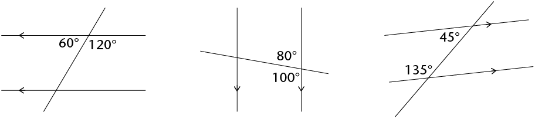
4. (a) Sonder om te meet, vul al die hoeke
hier onder in wat gelyk is aan x of y.
(b) Verduidelik jou redes vir elke
x en y wat jy ingevul het aan 'n
klasmaat.
A B
5. Gee die waardes van x
en y hier onder.

12.5 Bepaal onbekende hoeke op ewewydige lyne
BEPAAL ONBEKENDE
HOEKE
Bepaal die groottes van die onbekende
hoeke. Gee redes vir jou antwoorde. (Die eerste vraag is as
voorbeeld gedoen.)
|
1. Vind die groottes van
x,
y en
z.

|
x = 74°
[verw. ∠met
gegewe 74°; AB
// CD]
y = 74°
[ooreenk. ∠met
x; AB // CD]
ofy =
74° [regoorst. ∠met
gegewe 74°]
z =
106° [ko-binne∠met
x; AB // CD]
ofz =
106° [∠e op
reguit lyn]
|
|
2. Bereken die groottes
van p, q en r.
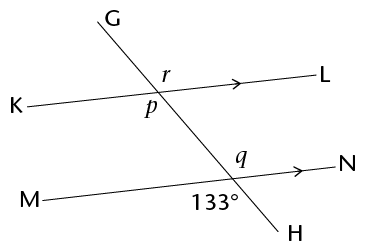
|
|
|
3. Bereken die groottes
van a, b, c en d.
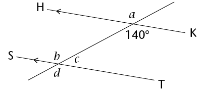
|
|
|
4. Bereken die
groottes van al die hoeke.

|
|
|
5. Bereken die
groottes van al die hoeke. (Kan jy twee snylyne entwee
stelle ewewydige lyne sien?)

|
|
|
UITBREIDING
|
|
|
|
Twee hoeke in die diagram
word gegee as x en
y.
Vul al die hoeke in wat gelyk is aan x of
y.

|
som van die hoeke in 'n
vierhoek
Hierdie diagram is 'n deel uit
die diagram hier bo.

1. Watter tipe vierhoek word hier
gewys? Gee 'n rede vir jou antwoord.
2.
Kyk na die snypunt links bo. Voltooi die volgende
vergelyking:
Hoeke om 'n punt =
360°
∴ x +
y +
+
= 360°
3.
Kyk na die binnehoeke van die vierhoek. Voltooi die
volgendevergelykings:
Kan jy aan nog 'n manier dink
waarop die diagram gebruik kan word om die som van die hoeke
van 'n vierhoek uit te werk?
Som van die hoeke in die
vierhoek = x + y +
+
Van vraag 2: x +
y +
+
= 360°
∴ Som van die
hoeke in die vierhoek =
°
12.6 Los meer meetkundige probleme op
HOEKVERwantskappe OP
EWEWYDIGE LYNE
|
1. Bepaal die groottes
van  tot tot  . .

|
|
|
2. Bepaal die groottes
van x, y en z.

|
|
|
3. Bepaal die groottes
van a, b, c en d.

|
|
|
4. Bereken die grootte
van x.

|
|
|
5. Bereken die grootte
van x.

|
|
|
6.
Bereken die grootte van x.

|
|
|
7. Bereken die groottes
van a en C P. P.

|
|
HOEKVERwantskappe EN DIE
EIENSKAPPE VAN DRIE- EN VIERHOEKE
1. Kyk na die figuur hier onder.
Identifiseer die hoeke wat langsaan beskryf word.
|

|
(a) 'n paar regoorstaande
hoeke
(b) 'n paar ooreenkomstige
hoeke
(c) 'n paar verwisselende
binnehoeke
(d) 'n paar ko-binnehoeke
|
2. In die diagram is AB// CD. Bereken die groottes van
F G,
G,  , en
, en  . Gee redes vir jou antwoorde.
. Gee redes vir jou antwoorde.

3. In die diagram is OK = ON,
KN// LM,
KL// MN en
L O = 160°. Bereken die
waarde van x. Gee
redes vir jou antwoorde.
O = 160°. Bereken die
waarde van x. Gee
redes vir jou antwoorde.


Hersiening 232
- Algebraïese
uitdrukkings 2 232
- Algebraïese
vergelykings 2 235
- Konstruksie van meetkundige
figure 236
- Meetkunde van 2D-figure
240
- Meetkunde van reguit lyne
242
Assessering 244
Hersiening
Wys al die stappe in jou werk.

ALGEBRAÃESE UITDRUKKINGS
2
1. Vereenvoudig:
(a) x2 + x2
(b) m + m \times m + m
(c) 5ab –
7a2 –
2a2 + 11ba
(d) (3ac2)(-4a2b)
(e) (–4a2b3)3
(f) 
(g) 
(h) 
(i) (2x + 3x)3
(j) 3x2(4x3 - 5)
(k) (4a - 7a)(a2 - 2a - 5)
(l) 
(m) 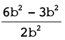
(n) 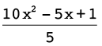
(o) 
2. Vereenvoudig die volgende
uitdrukkings:
(a) 3(a + 2b) - 4(b - 2a)
(b) 3 - 2(5x2 + 6x - 2)
(c) 2x(x2 - x + 1) - 3(4
- x)
(d) (2a + b - 4c) - (5a + b - c)
(e) a{2a2[4 + 2(3a + 1)] -
a}
3. As a = 0, b = –2, en
c = 3, bepaal die
waarde van die volgende sonder om 'n sakrekenaar te gebruik.
Wys al jou berekeninge:
(a) b2c
(b) 2b –
b(ab –
5bc)
(c) 
4. As y = –2,
bepaal die waarde van 2y3 –
4y + 3.
ALGEBRAÃESE VERGELYKINGS
2
1. Los die volgende vergelykings
op:
(a) -x = -7
(b) 2x = 24
(c) 3x - 6 = 0
(d) 2x + 5 = 3
(e) 3(x - 4) =
-3
(f) 4(2x - 1) =
5(x -
2)
2. Sello is x jaar oud. Thlapo is 4 jaar
ouer as Sello. Die som van hulle ouderdomme is 32.
(a) Skryf hierdie inligting in 'n
vergelyking deur x
as die veranderlike te gebruik.
(b) Los die vergelyking op om Thlapo se
ouderdom te bepaal.
3. Die lengte van 'n
reghoek is (2x + 8)
en die breedte is 2 cm. Die oppervlakte van die reghoek is 12
cm2.
(a) Skryf hierdie inligting in 'n
vergelyking deur x
as die veranderlike te gebruik.
(b) Los die vergelyking op om die waarde van
x te bepaal.
(c) Wat is die lengte van die reghoek?
4. Die oppervlakte van 'n
reghoek is (8x2 + 2x) cm2, en die lengte is
2x cm. Bepaal die
breedte van die reghoek in terme van x, in sy eenvoudigste vorm.
KONSTRUKSIE VAN MEETKUNDIGE
FIGURE
Moenie enige
konstruksieboë in hierdie vrae uitvee nie.
1. (a) Konstrueer D F = 56° met jou liniaal,
potlood en 'n gradeboog. Benoem die hoek korrek.
F = 56° met jou liniaal,
potlood en 'n gradeboog. Benoem die hoek korrek.

(b) Halveer D F deur net 'n passer, liniaal
en potlood (nie 'n gradeboog nie) te gebruik.
F deur net 'n passer, liniaal
en potlood (nie 'n gradeboog nie) te gebruik.
2. Hier is 'n ruwe skets van 'n
vierhoek (NIE volgens skaal geteken nie):

Konstrueer die vierhoek akkuraat
en in volle grootte hier onder.
3. Gebruik net 'n passer, liniaal
en potlood en konstrueer:
(a) 'n lyn deur C wat loodreg op AB is
(b) 'n lyn deur D wat loodreg op AB is.

4. Konstrueer en benoem die
volgende driehoeke en vierhoeke:
(a) Driehoek ABC, waar AB = 8 cm, BC = 5,5
cm en AC = 4,9 cm
(b) Ruit GHJK, waar GH = 6 cm en
 = 50°
= 50°

5. Hier is 'n ruwe skets van
driehoek FGH (NIE volgens skaal geteken nie):
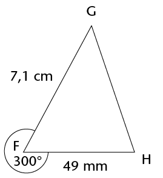
Gebruik 'n liniaal, potlood en gradeboog, en
konstrueer en benoem die driehoekakkuraat en in volle
grootte.

6. Konstrueer 'n hoek van
120° sonder om 'n gradeboog te gebruik.
MEETKUNDE VAN 2D-FIGURE
1. Waar of onwaar? Alle
gelyksydige driehoeke – dit maak nie saak
hoe groot hulle is nie – het hoeke wat gelyk
is aan 60°.
2. (a) Twee van die hoeke in 'n driehoek is
35° en 63°. Bereken die grootte van die
derde hoek.
(b) Een van die hoeke in 'n vierhoek is 'n
regte hoek en 'n ander een is 80°. As die
oorblywende twee hoeke ewe groot is, wat is die grootte van
elkeen?
3. As  = 40° en = 90° in driehoek MNP, wat
is die grootte van ?
= 40° en = 90° in driehoek MNP, wat
is die grootte van ?
4. Skryf definisies van die
driehoeke in die tabel hier onder neer.
|
|
|
|
|
A
triangle which has all sides equal and so each angle is
equal to 60°.
|
A
triangle in which two of the sides are equal. The
angles opposite the equal sides are also equal.
|
A
triangle in which one angle is equal to
90°.
|
5. Die volgende lys gee die
eienskappe van drie vierhoeke: A, B en C.
(a) Gee die spesiale name van elk van figure
A, B en C.
Vierhoek A: Die teenoorstaande
sye is gelyk en ewewydig.
Vierhoek B: Die
aangrensende sye is gelyk, terwyl die teenoorstaande sye nie
gelyk is nie.
Vierhoek C: Al die hoeke is
regte hoeke.
(b) Watter eienskap moet vierhoek A ook
hê om dit 'n ruit te maak?
(c) Watter eienskap moet vierhoek A ook
hê om dit 'n reghoek te maak?
6. Bepaal die grootte van
 . Wys al die stappe van jou berekening
en gee redes.
. Wys al die stappe van jou berekening
en gee redes.
x = 30°
7. Bepaal die grootte van
x. Gee redes.
MEETKUNDE VAN REGUIT LYNE
1. Bestudeer die diagram
langsaan:
(a) Noem 'n hoek wat regoorstaande aan
E G is.
G is.
(b) Noem 'n hoek wat ooreenkomstig aan
E G is.
G is.
(c) Noem 'n hoek wat 'n ko-binnehoek met
E G is.
G is.
(d) Noem 'n hoek wat verwisselend met
E G is.
G is.
2. Bepaal die grootte van
x in elk van die
volgende diagramme. Wys alle stappe van jou werk en gee
redes.
(a)
(b)
x + 90° = 110° [corr. ∠s; DF
// GJ]
x = 110° - 90°
x = 20°
(c)
(d)
x = 180° - 2(50°)
[sum of ∠s of
Δ = 180°]
(e) Is lynstukke AB en DE ewewydig? Bewys
jou antwoord.
Assessering
In hierdie afdeling dui die getalle
tussen hakies aan die einde van 'n vraag die getal punte aan
wat die vraag werd is. Gebruik hierdie inligting om jou te help
bepaal hoeveel werk nodig is. Die totale getal punte wat aan
die assessering toegeken word, is 75.

1. Vereenvoudig die volgende
uitdrukkings:
(a) 5x2 –
6x2 + 10x2 (1)
(b) 4(3x – 7)
– 3(2 + x) (2)
(c)
(–2a2bc3)2 \div 4abcd (3)
(d)  (3)
(3)
(e)  (3)
(3)
(f) 2[3x2 – (4
– x2)] – [9 +
(4x)2] (3)
2. Bepaal die waarde van
a as b = 3, c = –4 en
d = 2:
(a) a = b + c \times d (2)
(b) ab2 = 2c –
d \div 2 (3)
3. Los die volgende vergelykings
op:
(a)
–7x = 56 (2)
(b) 4(x + 3) = 16 (2)
4. Sipho, Fundiswa en
Ntosh is broers. Sipho verdien Rx per maand; Fundiswa verdien R1
000 meer as Sipho per maand, en Ntosh verdien dubbel wat Sipho
verdien. As jy hulle salarisse bymekaartel, kry jy 'n totaal
van R27 000.
(a) Skryf hierdie inligting in 'n
vergelyking deur x
te gebruik. (2)
(b) Los die vergelyking op om uit
te vind hoeveel Fundiswa per maand verdien. (2)
5. Konstrueer die
volgende deur net 'n potlood, liniaal en passer te gebruik.
Moenie enige konstruksieboë uitvee nie.
(a) 'n Hoek van 60°
(2)
(b) Die loodregte halveerlyn van
lyn VW, waar VW = 10 cm (3)
(c) Driehoek KLM, waar KL = 8,3
cm, LM = 5,9 cm en KM = 7 cm (4)

(d)
Parallelogram EFGH, waar E = 60°, EF = 4,2 cm en EH
= 8 cm (4)

6. (a) Wat is die kenmerk(e) wat
'n ruit anders as 'n
parallelogram maak? (1)
(b) Waar of onwaar? 'n Reghoek is
'n spesiale soort parallelogram. (1)
7. Bepaal die grootte van
x in elke figuur.
Wys al die nodige stappe en gee redes vir alle bewerings:.
(a)
(3)
(b)
(4)
(c)
(3)
x = 180° - 2(38°)
[isos. Δ and sum of ∠s in
Δ]
8. Bestudeer die diagram.
Beantwoord dan die vrae wat volg:
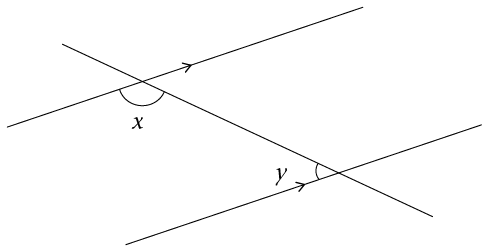
(a) Wat
word hoeke soos x en
y genoem?
Voltooi:
x en y vorm 'n paar
. (1)
(b) Skryf 'n vergelyking neer wat
die verwantskap tussen hoeke x en y wys. (1)
9. Bepaal die grootte van
x. Wys al die nodige
stappe en gee redes vir alle bewerings wat jy maak.
(a)
(4)
(b)
(5)
x = 105° \div 3 =
35°
(c)
(3)
x = ED = 72° [corr. ∠s AB
// EC]
10. Kyk na die volgende
diagram, waarin gegee word dat D I = 30°, DE = EI, DF
// IG, en GH = IH.
I = 30°, DE = EI, DF
// IG, en GH = IH.
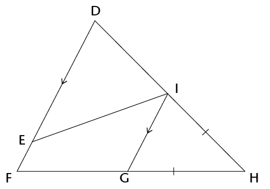
(a) Bepaal, met redes, die
grootte van  . (6)
. (6)
(b) Watter van die volgende
stellings is korrek? Verduidelik jou antwoord. (2)
(i) \triangle}DEI is gelykvormig aan
\triangle}GHI
(ii) \triangle}DEI is kongruent aan
\triangle}GHI
(iii) Ons kan nie 'n verwantskap tussen
\triangle}DEI en \triangle}GHI bepaal nie omdat daar nie genoeg
inligting gegee word nie.
Stelling
is korrek want